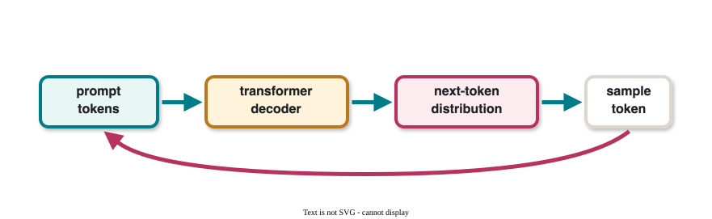
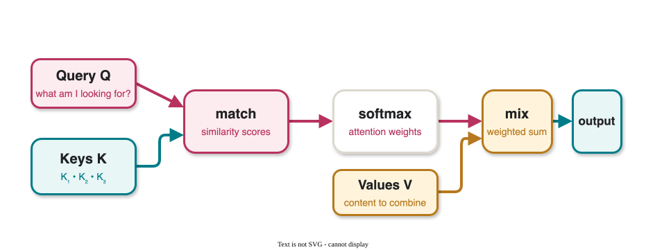
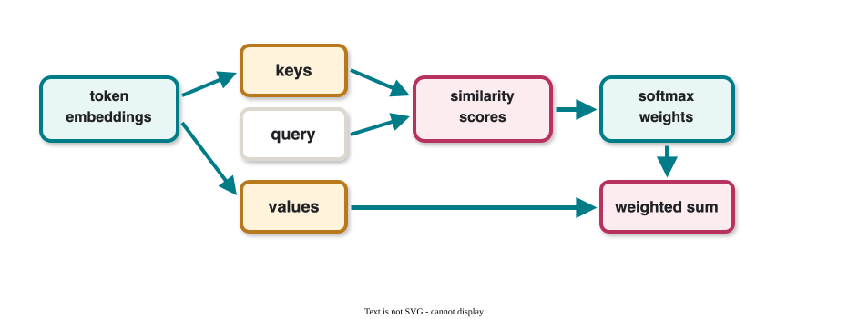

CS 463G & CS 663
(Intro to) AI
Lecture 34: Transformers
Fall 2026
Transformers replace recurrence with attention, making long-sequence modeling highly parallel.
Transformers were introduced in Attention Is All You Need in 2017.
They now dominate:
GPT, BERT, T5, Llama, and many other modern models are transformer-based.
Decoder-only transformers generate left to right:
p(x_1,\ldots,x_T)=\prod_{t=1}^{T}p(x_t\mid x_{<t})

| Year | Model/paper | Contribution |
|---|---|---|
| 2017 | Attention Is All You Need | Transformer architecture |
| 2018 | BERT | Bidirectional transformer pretraining |
| 2019 | GPT-2, T5 | Larger language models, text-to-text framing |
| 2020 | GPT-3 | Few-shot language-model scaling |
Given tokens:
a_1,a_2,\ldots,a_n
Each token maps to a vector:
x_i\in \mathbb{R}^{d_e}
Matrix representation:
X= \begin{bmatrix} x_1 & x_2 & \cdots & x_n \end{bmatrix} \in \mathbb{R}^{d_e\times n}
| Encoding | Description |
|---|---|
| One-hot | Sparse, high-dimensional, fixed |
| Learned embedding | Dense vectors trained end-to-end |
| Pretrained embedding | Initialized from existing language representations |
Embeddings turn discrete tokens into continuous vectors that neural networks can manipulate.
We have context embeddings X and query embeddings X_Q.
Learned projections create:
K=W_KX,\qquad Q=W_QX_Q,\qquad V=W_VX
| Symbol | Role |
|---|---|
| Query | What am I looking for? |
| Key | What information is available? |
| Value | What content should be returned? |

Softmax converts scores into a probability distribution:
\operatorname{softmax}(z)_i = \frac{e^{z_i}}{\sum_{j=1}^{n} e^{z_j}}
Properties:
In attention, softmax turns similarity scores into mixing weights.
\operatorname{Attention}(Q,K,V)= V\cdot \operatorname{softmax}\left(\frac{K^TQ}{\sqrt{d_k}}\right)
Interpretation:

Attention for many queries can be computed together:
\text{Attention}(X_Q)= \begin{bmatrix} \text{Attention}(\tilde{x}_1)&\cdots&\text{Attention}(\tilde{x}_{n_q}) \end{bmatrix}
All query positions can be processed in parallel, which is a major speed advantage over RNNs during training.